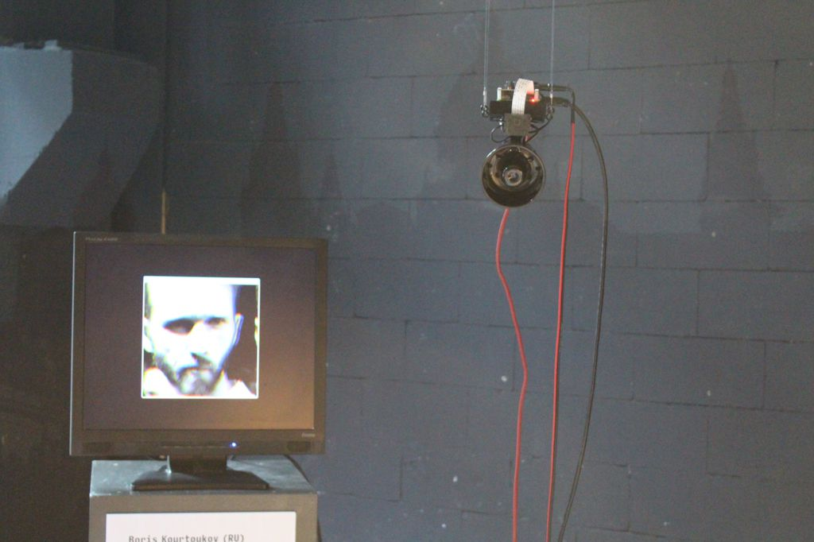
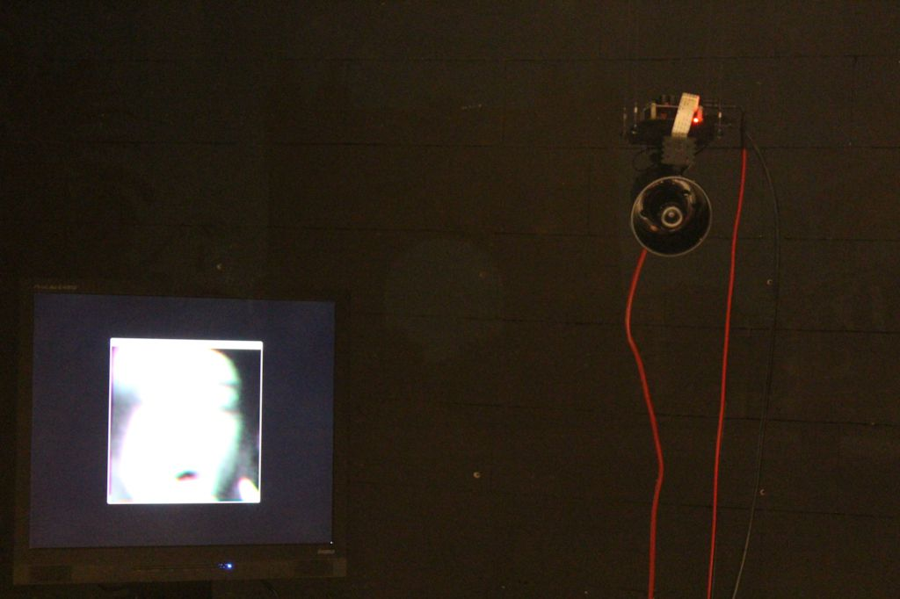

How would machines make us feel if we could give a human voice to their algorithmic logic?
By attempting to answer this question this project explores our relationship to algorithms, surveillance, and inherently biased systems.
Through audible dialogue Machines that Judge Us aims to manifest the thought process within tracking and policing algorithms. The human-like mannerisms in these conversations make it apparent that if such judgements were made by fellow humans, they would be the clear villains in our society. With the hope of eliciting anger toward these algorithms and the entities that make use of them.
A series of small, identical, machines observe humans moving within a space. One person becomes their focus once a machine singles them out. Each, then, makes a judgement on how valuable that person would be, purely based on visual appearance. If deemed valuable, they talk about how they want to exploit this human being. If deemed worthless they talk about why that is the case, and how they would rid themselves of this person as soon as possible.
Background
This project is a reaction to rampant passive data gathering that surrounds us today. Many products and services are designed to collect personal information as a secondary value for the provider. With this wealth of data companies justify a great deal of their decision making. Unfortunately the code that operates upon troves of our personal data is often not subject to regulation (outside of what was allowed to be gathered at the time.) At the same time this code is also being largely written with only functional, rather than also ethical, considerations in mind.
This creates the unfortunate situation where algorithms make consistently, and with false confidence, invalid decisions about and on behalf of their users. As these decisions are being made invisibly and by non-human agents, the public tends to downplay or be unaware of their existence. It is the intent of this project to make the nature of these algorithms more easily apparent and understood.


{kind=link}
{kind=link}